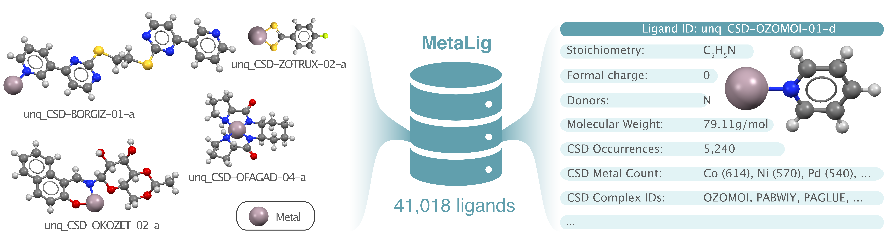
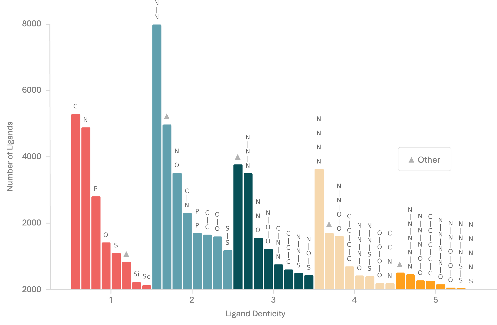
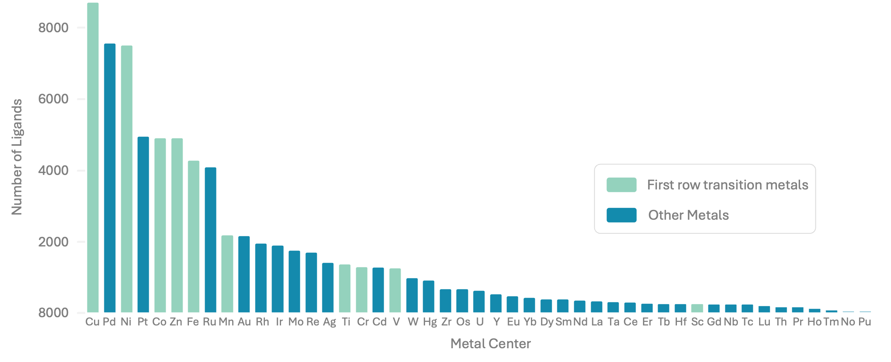

MetaLig Ligand Database
The organoMetallic Ligand database (MetaLig) contains 41,018 ligands extracted from the Cambridge Structural Database (CSD). It contains 3D coordinates, formal charge, molecular graph and a variety of physical properties. Each ligand also includes statistical data about its occurrences in the CSD, such as which metals it typically coordinates to.
The MetaLig ligand database can be used in a variety of applications:
DART Assembler: As a source of ligands for the DART Assembler module.
DART Ligand Filters: Filter ligands based on their properties to target specific chemical spaces in the Assembler module.
Ligand Analysis: To analyze and explore ligands across the CSD.
Ligand Property Prediction: As a dataset for training machine learning models.
{kind=link}

Ligands and ligand properties in the MetaLig database.
Explore Ligand Structures and Properties
To explore the ligands in the MetaLig, use the terminal to run the command
DARTassembler dbinfo --path metalig
This will generate two files, an .xyz file and a .csv file:
The .xyz file contains the 3D structures of all ligands. To view and browse through the ligands with ase, you can use the command ase gui concat_MetaLigDB_v1.0.0.xyz. Each ligand is coordinated to a Cu metal center for visualization purposes. The Cu metal center is not part of the ligands in the MetaLig, it is only added to the .xyz file to display the coordination of each ligand.
The .csv file displays a range of physical and statistical properties of each ligand:
- Physical properties :
Ligand ID
Stoichiometry
Denticity
Formal Charge
Donors
Number of Atoms
Molecular Weight - in g/mol.
Ligand Planarity - Degree of planarity of all ligand atoms between 0 and 1, where 1.0 represents a perfect plane.
Haptic - True if the molecular graph has any neighboring donor atoms, False otherwise.
Beta-Hydrogen - If the ligand has a hydrogen in beta position to the metal center.
Max. Interatomic Distance - Length of the ligand in Angstrom in the longest direction.
Graph ID - The ID of the molecular graph in the database, unique for each unique ligand.
- Statistical CSD properties :
CSD Occurrences - The number of occurrences of the ligand in the CSD.
CSD Complex IDs - The IDs of the complexes in the CSD that contain the ligand.
CSD Metal Count - All metals that the ligand is coordinated to in the CSD, along with their counts.
Explore and Filter the MetaLig in Python
For many users, the DART Ligand Filters module will be enough to filter ligands with exactly defined properties. For complete freedom in filtering and exploring, the MetaLig database can be accessed via the DART Python API. As an example, let us extract ligands with denticity of 2, charge of -1 and a maximum of 50 atoms using Python.
First, read in the MetaLig. To speed things up in this example, let’s only load the first 1000 ligands (which is equivalent to specifying test_metalig as the path):
from DARTassembler.src.ligand_extraction.DataBase import LigandDB
# Load the first 1000 out of 41,018 ligands in the MetaLig database.
metalig = LigandDB.from_json(path='metalig', n_max=1000)
Now, you can filter the MetaLig database based on your requirements. For example, let’s filter the MetaLig so that we retain only ligands with a formal charge of -1, with denticity of 2 and with a maximum of 50 atoms:
# Set some criteria to filter ligands
keep_denticity = 2
keep_charge = -1
max_n_atoms = 50
ligands_to_keep = []
for ligand_name, ligand in metalig.db.items():
correct_denticity = ligand.denticity == keep_denticity
correct_charge = ligand.pred_charge == keep_charge
correct_n_atoms = ligand.n_atoms <= max_n_atoms
if correct_denticity and correct_charge and correct_n_atoms:
ligands_to_keep.append(ligand_name)
# Reduce MetaLig database to only keep ligands which adhere to the above criteria
filtered_metalig_dict = {ligand_name: ligand for ligand_name, ligand in metalig.db.items() if ligand_name in ligands_to_keep}
filtered_metalig = LigandDB(filtered_metalig_dict)
Now, we can save the filtered MetaLig database to a .jsonlines file.
filtered_metalig.save_to_file('filtered_metalig.jsonlines')
This .jsonlines file can be used in the DART Assembler module as source for ligands. Since we made a database of bidentate ligands with a formal charge of -1, we could use it for example to assemble neutral square-planar Ni(II) complexes with two bidentate ligands, i.e. a 2-2 geometry in DART.
We can also save an overview table of the filtered ligand database as .csv file:
filtered_metalig.save_to_csv('filtered_metalig.csv')
By opening the .csv file with a program like Excel, you will see that this table displays 136 bidentate ligands with a formal charge of -1 and a maximum of 50 atoms. In this way, you can use Python to filter the MetaLig database to your exact requirements and then save the filtered database to a .jsonlines file for use in the DART Assembler module.
Ligand Statistics
{kind=link}

Bar chart of donor atoms in the MetaLig. For instance, there are nearly 8,000 N-N donor ligands present.
{kind=link}

Bar chart showing the prevalence of ligands coordinating to specific metals, such as over 8,000 instances of ligands which were found in the CSD coordinating to Cu.